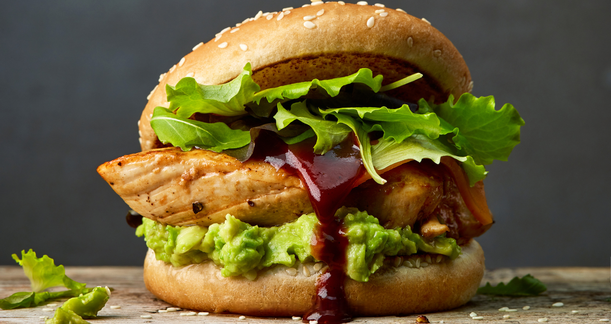
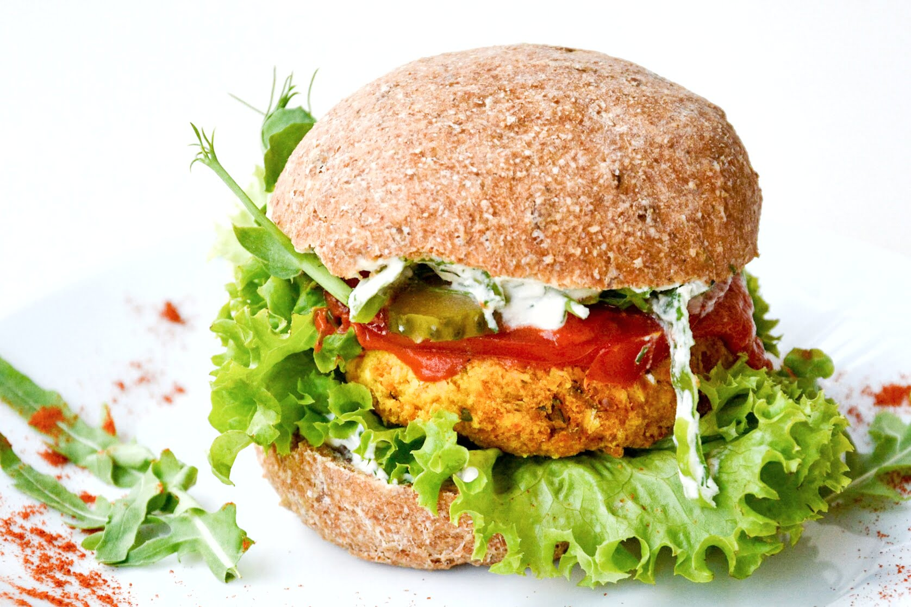
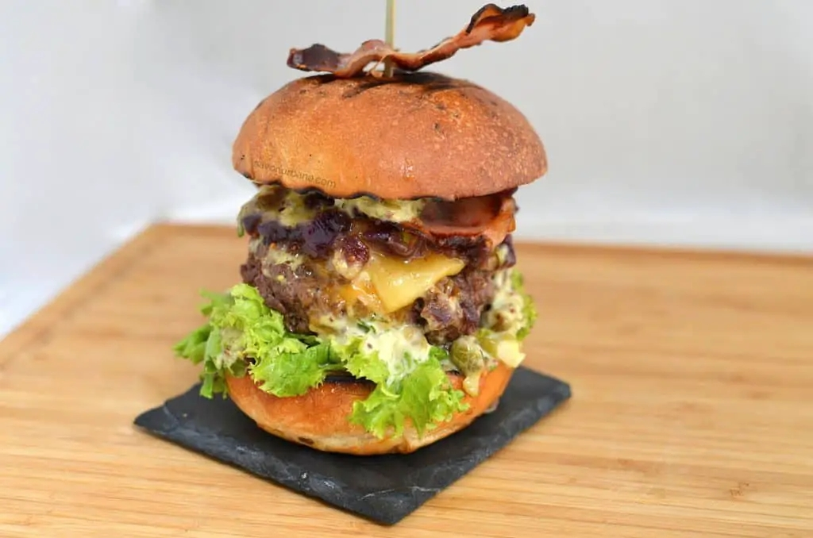
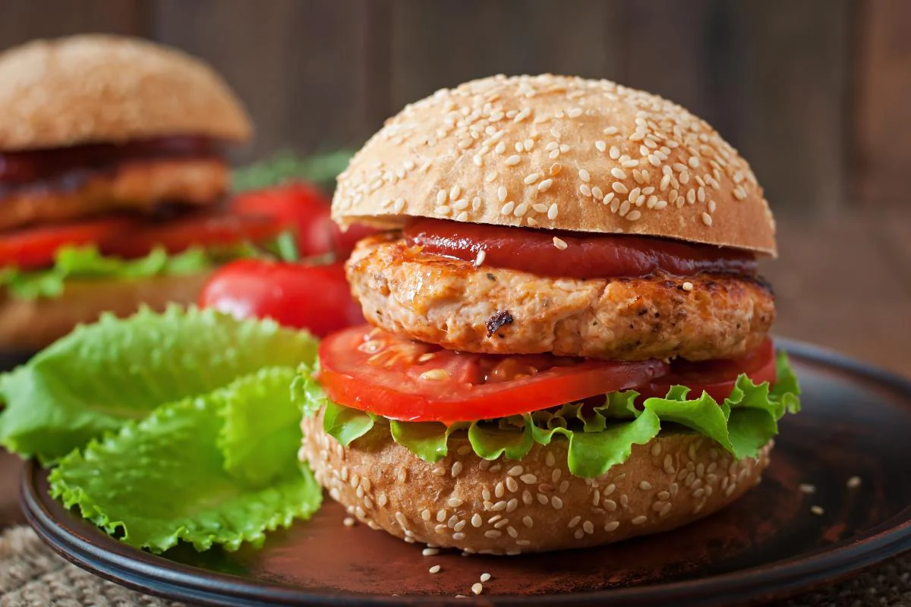

Meniul Burgeri
Burgeri suculenți, preparați cu carne slabă și legume proaspete.
- Ingrediente: Carne de vită slabă, chiflă integrală, salată, roșii, castraveți, sos de iaurt.
- Valori nutriționale: 350 kcal, 25g proteine, 40g carbohidrați, 10g grăsimi.

Preț: 30 RON
Burger de pui cu avocado și lime, o combinație delicioasă și sănătoasă.
- Ingrediente: Carne de pui, avocado, lime, sos picant, coriandru, ulei de avocado.
- Valori nutriționale: 350 kcal, 30g proteine, 10g carbohidrați, 20g grăsimi, 5g fibră.

Preț: 32 RON
Burger vegetarian cu năut, o opțiune sănătoasă și delicioasă pentru iubitorii de plante.
- Ingrediente: Năut, chiflă integrală, salată, roșii, castraveți, sos tahini.
- Valori nutriționale: 300 kcal, 12g proteine, 40g carbohidrați, 8g grăsimi.

Preț: 28 RON
Burger de somon, bogat în omega-3 și perfect pentru o masă sănătoasă.
- Ingrediente: Somon, chiflă integrală, salată, roșii, avocado, sos de iaurt.
- Valori nutriționale: 350 kcal, 25g proteine, 30g carbohidrați, 15g grăsimi.

Preț: 35 RON
Burger de curcan cu spanac și feta, o opțiune sănătoasă și plină de savoare.
- Ingrediente: Carne de curcan, spanac, brânză feta, chiflă integrală, roșii, castraveți, sos de iaurt.
- Valori nutriționale: 320 kcal, 28g proteine, 25g carbohidrați, 12g grăsimi.

Preț: 34 RON